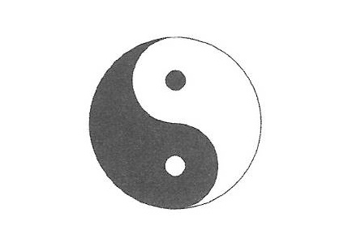

東洋思想応用学 基本論
テキスト全体：計算待ち第2章：東洋思想と応用
このページの学習状況
0%
完了 0 / 3 節
陰陽論
物事はすべて陰と陽から成り立っている
「陰陽論」（いんようろん）とは、物事はすべて陰と陽からなり、その二つは互いに影響し合い、バランスをとりながら成り立っているという考えです。
光と影、有と無、天と地、北と南、夏と冬、右と左、男と女など、あらゆるものが二対となって影響し合っています。
陰陽の成り立ちを表した太極図
その成り立ちを図にしたものが「太極図」です。
これは、単に陰陽の関係を表しただけではなく、宇宙の始まりをも表していると言われています。
気の源が集まった「無のエネルギー世界」にゆらぎが生じ、エネルギーが集まり、はっきりと「気の世界」と呼べるような世界ができました。
その気は、清くて軽い気（陽気）と、重くて濁った気（陰気）に分かれました。
陰陽の調和が生命と健康を支える
気は宇宙となり、その宇宙の中でも陰気と陽気は分かれました。
陽気が天となり、陰気が地となり、地球が生まれました。
天の陽気（空気などの見えない活力源）と、地の陰気（飲食物などの活力源）を取り入れて生命は誕生し、命を維持してきました。
生命を維持する心や体にも陰陽は存在し、その調和が取られていれば健康であり、不調和になると病気になる。すべては陰陽論により、宇宙や自然や運命や健康までもバランスを保っていると考えています。
